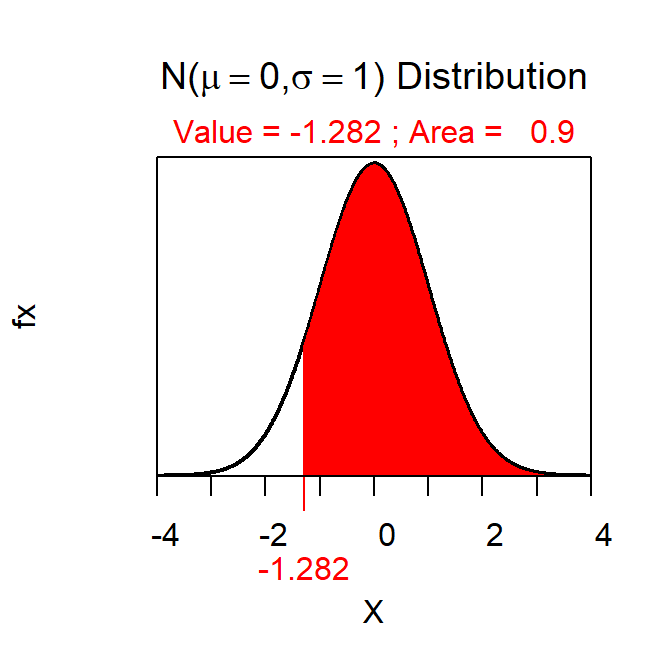
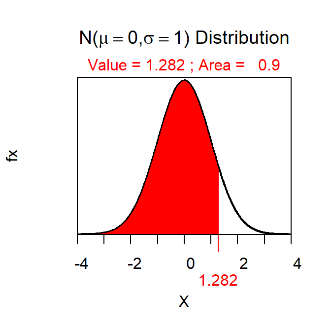

Confidence Region Calculations
Note:
- The level of confidence comes from 1-α
- The type of confidence region comes from the HA: a “less than” HA is an upper bound, a “greater than” HA is a lower bound, and a “not equals” HA is an interval.
-
The Z* uses the level of confidence in
distrib()for the bounds but the “tail area” must be used for the intervals. Look closely at the R Appendices, especially for the interval questions.
- See below.
- C=0.90
- Lower bound
- Z*=-1.282 (Figure 1).
- 77.3.
- I am 90% confident that the true population mean is greater than 77.3.

Figure 1: Normal distribution representing the Z* the first confidence region example.
- See below.
- C=0.95
- Interval
- Z*= ± 1.960 (Figure 2).
- 8.8-13.6.
- I am 95% confident that the true population mean is between 8.8 and 13.6.

Figure 2: Normal distribution representing the Z* the second confidence region example.
- See below.
- C=0.99
- Lower bound
- Z*=-2.326 (Figure 3).
- 894.6.
- I am 99% confident that the true population mean is greater than 894.6.

Figure 3: Normal distribution representing the Z* the third confidence region example.
- See below.
- C=0.90
- Upper bound
- Z*=1.282 (Figure 4).
- 15149.9.
- I am 90% confident that the true population mean is less than 15149.9.

Figure 4: Normal distribution representing the Z* the fourth confidence region example.
R Appendix
zstar <- distrib(0.9,type="q",lower.tail=FALSE)
zstar <- distrib(0.025,type="q",lower.tail=FALSE)
zstar <- distrib(0.99,type="q",lower.tail=FALSE)
zstar <- distrib(0.9,type="q")
Note:
- In the second part of each question below you MUST not say μ – rather you should say what μ represents (e.g., “true population mean body temperature” in the first question).